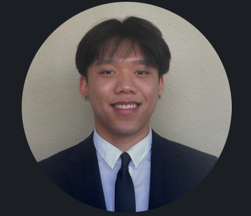

Peter Hoang Nguyen
UCFID: 5456353 | Pe264311@ucf.edu | Linkedin
UNIQUE PROJECTS
PROFESSIONAL OBJECTIVE
- Hey guys! I'm a 4th year information technology student at the University of Central Florida, passionate about cybersecurity and IT.
Currently, I'm working on expanding my cybersecurity knowledge while preparing for the CompTIA Security+ certification.
I also enjoy hands-on projects like building secure networks, frontend development, and implementing cybersecurity best practices.
EDUCATION
University of Central Florida
RELEVANT WORK EXPERIENCE
Cyber Security GRC Intern
- Reviewed, updated, and mapped 25+ internal security standards and policies to industry frameworks including CIS Controls and HITRUST CSF within OneTrust, improving compliance visibility and audit readiness.
- Leveraged Excel to cross-reference 50+ CIS and HITRUST controls against internal policies, identifying gaps and misalignments that led to the revision or creation of 10+ compliance procedures within OneTrust.
- Conducted policy, framework, and procedure research to identify best practices, resulting in the revision or creation of 3+ governance documents that strengthened organizational compliance regulations.
- Utilized OneTrust Questionnaire Response Automation (QRA) to streamline vendor risk assessments and reduce manual questionnaire completion time by 20%.